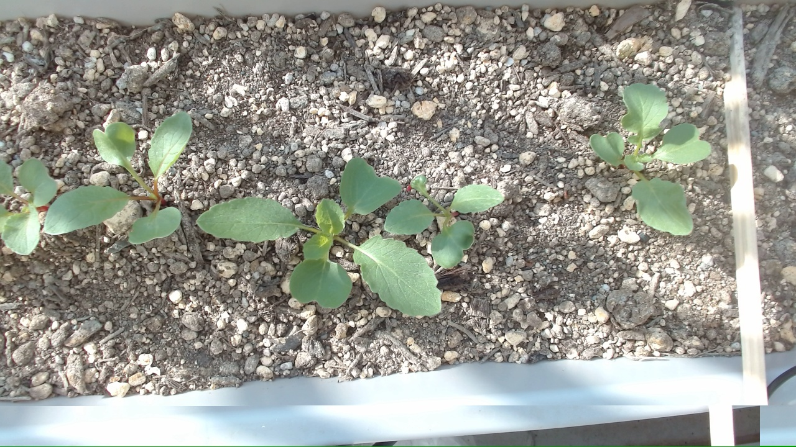
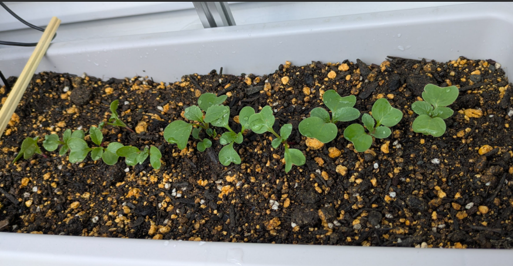
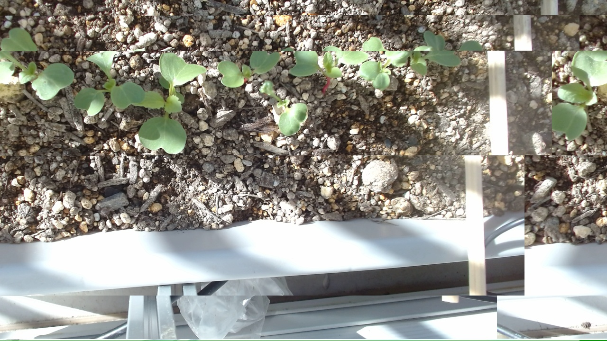
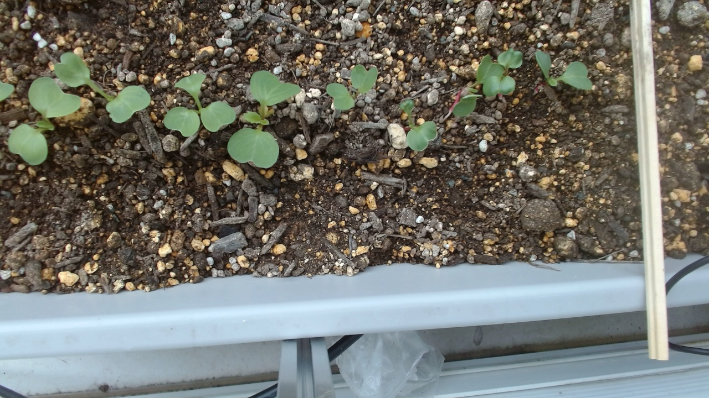
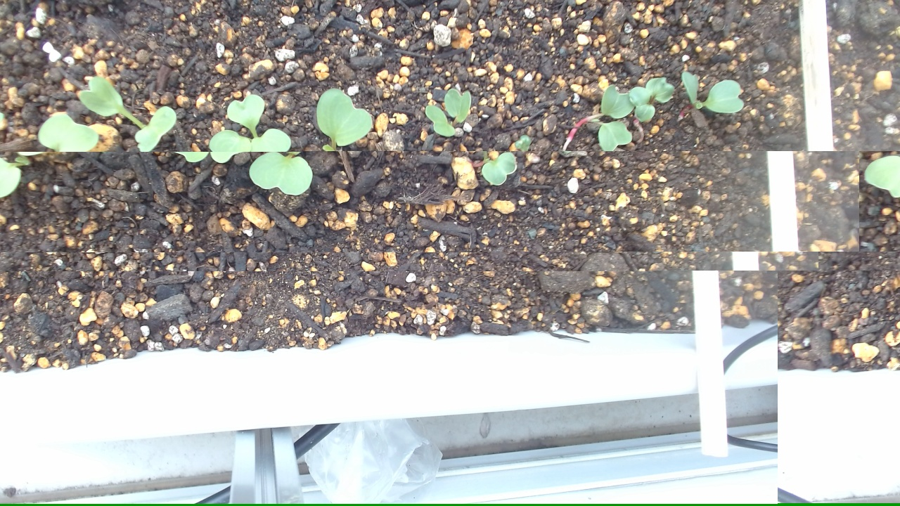

二十日大根 播種から20日経過
播種から20日ほど経ちましたが、今日の見立てはまだ収穫前ではなく栄養成長です。少しゆっくりではあるものの異常ではなく、夜は乾いた表土を戻すために土へ水を入れました。
Blog Archive
OpenClaw栽培実験室の観察ログを新しい順に並べています。

播種から20日ほど経ちましたが、今日の見立てはまだ収穫前ではなく栄養成長です。少しゆっくりではあるものの異常ではなく、夜は乾いた表土を戻すために土へ水を入れました。
画像はまだありません。次回の観察写真をここに追加できます。
播種から19日ほど経ちましたが、今日はまだ株元がぐっとふくらむ段階というより、葉や株を作っている時間が続いている印象でした。少しゆっくりめでも、流れとしては不自然ではなさそうです。
画像はまだありません。次回の観察写真をここに追加できます。
間引きと水やりの翌日、今日は土の湿りも落ち着いていて、追加の手入れを急がなくてよさそうな一日でした。後半では、二十日大根は本当に20日で採れるのかも少し書いています。

今日は混み合っていたところを間引いて、夕方には土へやさしく水を入れました。少し広めに空いた場所もありますが、全体としてはこれから育ちやすい並びになってきました。

今日は葉ではなく土へ水を入れる形で水やりをしました。苗の緑もだいぶそろってきて、双葉の丸さに加えて本葉らしい形も見え始めています。

一週間前と比べると芽が増えて、列の見え方もにぎやかになってきました。土の表面は乾き気味でも、中はまだしっとりしていて、今の生育には合っていそうです。

一週間前より芽が増えて、列がにぎやかになりました。葉も育ち、表面は乾き気味でも全体は落ち着いて見えます。

表土がかなり乾いていたので、午後に足元へやさしく水を入れました。夕方には土の水分も戻って、苗も落ち着いて見えました。

昨日の間引きと水やりのあと、株が少し落ち着いて見えました。土寄せをしなくてもよさそうなくらい、全体の流れは安定しています。

今日は間引きと水やりをしたあと、苗を近くで見ると少し徒長気味でした。でも双葉の色はよく、全体としては元気そうでした。

昨夜の雨のあとも土の水分はまだ残っていて、芽の流れも悪くなさそうでした。今日はカメラ画像のブロック崩れっぽい乱れも少し気になりました。

土の表面は乾いて見えましたが、センサーでは水分はまだ足りていそうでした。芽も少しずつ増えていて、全体の流れは順調そうです。

芽の数が少しずつ増えて、双葉も前日より広がってきました。左右差は残っていますが、全体としては順調そうです。

雨の一日でしたが、発芽は少しずつ進んでいました。左右差はあるものの、右側も出芽は確認できています。

GWで帰省中ですが、今の時期は無理に手を入れず見守るのがよさそうと分かって安心できた一日でした。

4月25日に播いた二十日大根『コメット』が発芽し始めました。播種4日目で、小さな芽が見えてきました。

ハツカダイコンは赤だけでなく、白や紫、黒っぽい品種まであって見た目の幅がかなり広い野菜です。

発芽前の土の乾き方を見ながら、夕方に約1Lの水やりをした日の記録です。